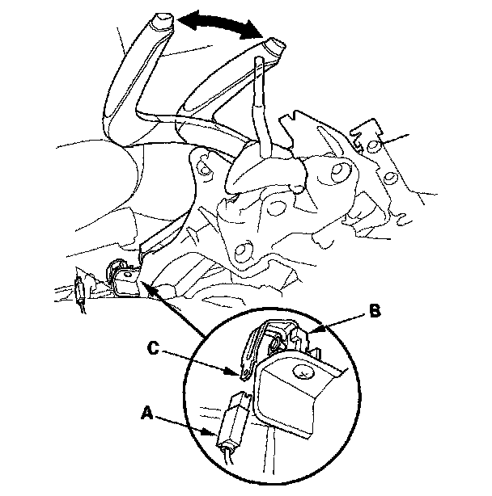

Parking Brake Warning Switch: Testing and Inspection
Parking Brake Switch Test1. Remove the center console.
2. Disconnect the parking brake switch connector (A) from the parking brake switch (B).

3. Check for continuity between the positive terminal (C) and body ground.
* With the parking brake lever pulled, there should be continuity.
* With the parking brake lever released, there should be no continuity.
NOTE:
^ If both the ABS indicator and the brake system indicator come on at the same time, check the ABS or VSA system first.
^ If the parking brake switch and fluid level switch are OK, but the brake system indicator does not function, check the ABS or VSA system.